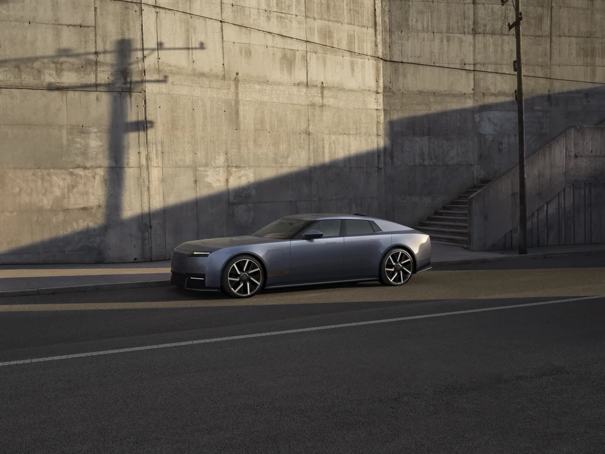
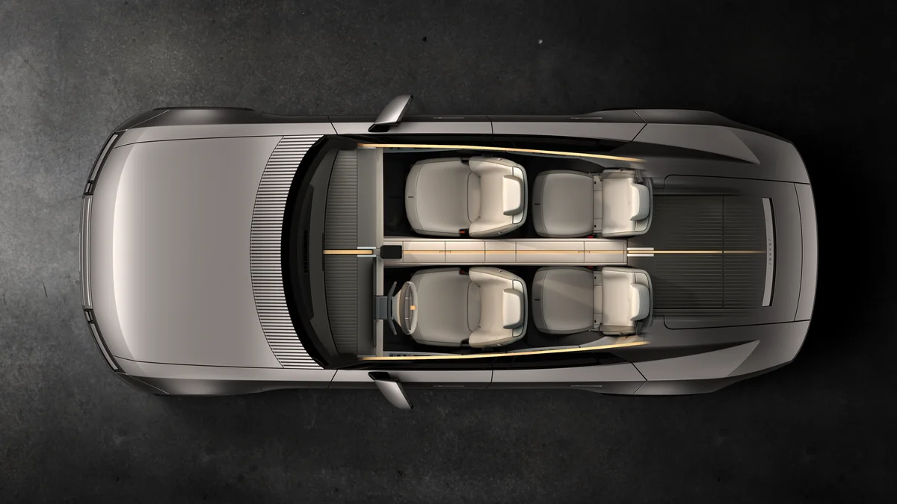
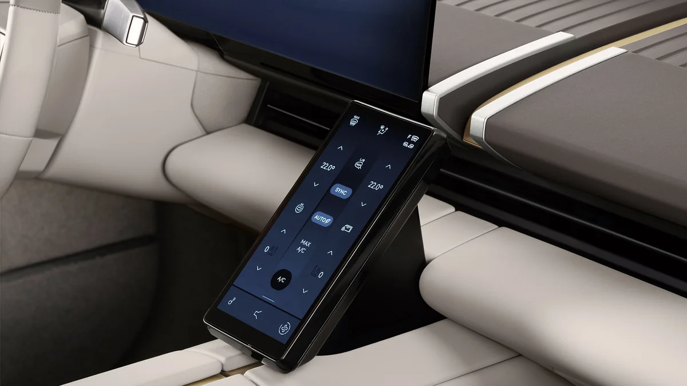
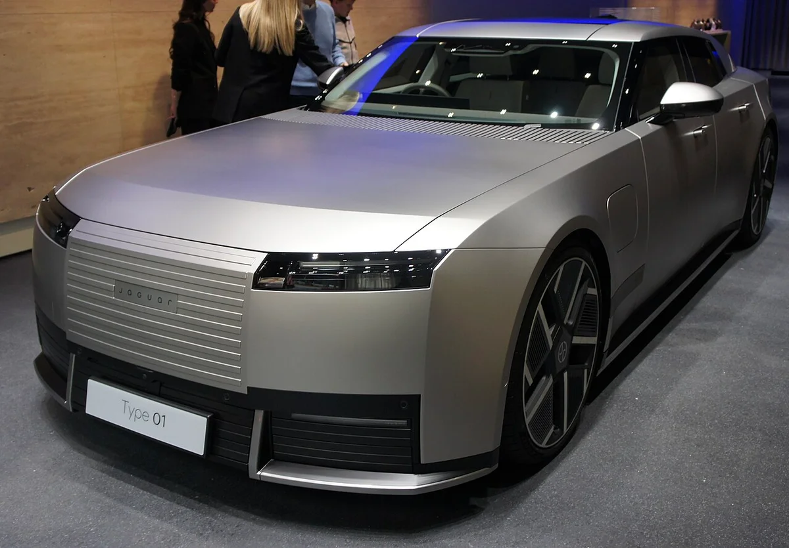
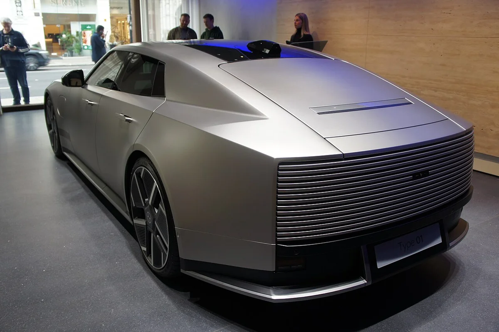

▲ 뉴욕 공개와 함께 배포된 재규어 타입 01 전면 3/4 공식 사진 ⓒ Jaguar Land Rover (JLR Media)
"공개 전에 '미확정'이라던 숫자들, 진짜로 나온 값은 뭐였을까?" 10월 1일 기사에서 가격표와 배터리는 아직이라고 했던 재규어 타입 01의 답이 10월 6일 뉴욕에서 나왔다. 이 글에서는 그때 비워 둔 칸을 하나씩 채우고, 우리 쪽 관심사인 국내 출시가 어디까지 확인되는지 정리한다.
재규어(JLR) 영국 본사의 10월 7일 보도자료 3종과 미국 보도자료, 그리고 JLR코리아 발표를 전한 국내 보도를 직접 열어 대조했다. 재규어가 직접 낸 숫자와 매체가 덧붙인 숫자는 구분해 적었고, 확인하지 못한 항목은 그렇게 표시했다.
1. 공개 전 '미확정'이던 항목, 뭐가 확정됐나
가장 큰 변화는 가격과 인도 시기가 공식 숫자로 나왔다는 점이다. 10월 1일 기사는 항속거리·배터리·가격·인도 시기가 보도마다 엇갈린다고 정리했다. 아래 표는 그 항목들을 공개 후 재규어 자료와 나란히 놓은 것이다. 공개 전 값은 해당 기사에서 매체 보도로 소개한 내용이다.
| 항목 | 공개 전(10/1 기사 기준) | 공개 후(재규어 10/7 자료) |
|---|---|---|
| 출력 | 1,000PS 이상(하한값) | 최대 1,030PS(미국 자료 1,015hp) |
| 토크 | 1,300Nm 이상(하한값) | 최대 1,365Nm(미국 자료 1,007lb-ft) |
| 배터리 | 약 120kWh(매체 인용) | 사용 가능 118kWh, 850V |
| 충전 | 2024년 목표 "15분에 200마일" | 350kW DC로 최단 13분에 200마일(321km) |
| WLTP 주행거리 | 2024년 목표 478마일 vs 2026년 보도 434~435마일 | 최대 450마일(720km), 인증 전 제조사 추정 |
| EPA 주행거리 | 2024년 목표 430마일 vs 보도 약 400마일 | 최대 400마일(21인치 휠), 인증 전 추정 |
| 가격 | 진입 약 12만 파운드(매체가 임원 발언으로 인용) | 영국 13만 파운드부터 · 미국 13만 500달러부터 |
| 주문·인도 | 인도 "2027년 여름" vs "2027년 상반기"로 엇갈림 | 주문 2027년 초, 첫 고객 인도 2027년 하반기 |
| 생산지 | 영국 생산(공장 미명시) | 영국 솔리헐, 2027년 생산 시작 |
| 한국 출시 | 확인된 발표 없음 | 국내 보도: 2027년 하반기 국내 첫 공개(JLR코리아 공식 가격·판매 방식은 미발표) |
※ 공개 후 수치는 모두 재규어(JLR) 보도자료 기준. 영국 자료에는 EPA·WLTP가 모두 "인증 전 제조사 추정"으로 적혀 있다.
▲ 뉴욕 공개와 함께 배포된 타입 01 전면 3/4 공식 사진. 낮은 지붕선과 긴 보닛이 보이는 4도어 GT 실루엣이다. ⓒ Jaguar Land Rover (JLR Media)
공개 전 기사에서 "하한값"이라고 짚었던 출력·토크는 둘 다 위로 확정됐다. 반대로 공개 전 매체 인용값이던 약 120kWh 배터리는 재규어가 사용 가능 용량 118kWh로 정리했다. 주행거리와 가격은 다음 섹션에서 더 자세히 본다. 공개 전 기사: "1,000PS는 확정, 가격표는 아직"… 재규어 타입 01, 10월 6일 뉴욕 공개 전 확정·미확정 가르기
2. 출력·토크·성능: "1,000PS 이상"은 1,030PS였다
재규어는 타입 01을 "가장 강력한 재규어 양산 도로차"로 소개했다. 앞 1개·뒤 2개로 알려진 트라이모터 구성(재규어는 트라이모터와 지능형 토크 벡터링을 명시)에서 최대 1,030PS, 최대토크 1,365Nm를 낸다. 0→100km/h는 3.2초, 100→180km/h는 4.0초다. 앞뒤 무게 배분은 50 대 50이라고 밝혔다.
| 항목 | 수치 | 비고 |
|---|---|---|
| 최고출력 | 최대 1,030PS | 미국 자료는 1,015hp로 표기(단위 차이) |
| 최대토크 | 최대 1,365Nm(국내 보도 139.2kg·m) | 미국 자료 1,007lb-ft |
| 0→100km/h | 3.2초 | 100→180km/h는 4.0초 |
| 구동 | 트라이모터 + 지능형 토크 벡터링 | 재규어 TCS 레이싱 노하우로 튜닝했다고 설명 |
| 공기저항계수 | Cd 0.23 | 액티브 베인·3단 전개식 스포일러 |
| 앞뒤 무게 배분 | 50 대 50 | — |
| 최고속도 | 발표 자료에서 확인하지 못함 | 공개 전 매체의 250km/h 목표는 공식 확인 없음 |
※ 출처: JLR 보도자료(2026.10.7)·JLR 미국 보도자료. 1,030PS는 약 1,016hp이며 미국 표기 1,015hp와 같은 값이다(마력 단위 환산 차이).
"1,030마력"이라는 국내 표기는 PS(미터마력)다. 영미식 마력(hp)으로는 1,015hp라서 해외 기사의 "986hp"(공개 전 1,000PS 기준 환산)나 "1,015hp"가 섞여 보여도 같은 차를 가리킨다. 이 수치는 재규어가 밝힌 값이며 독립 시험 결과는 아직 없다.
▲ 타입 01 측면 공식 사진. 짧은 앞 오버행과 긴 보닛, 뒤로 길게 빠진 리어 오버행이 확인된다. 재규어는 23인치 휠을 언급했다. ⓒ Jaguar Land Rover (JLR Media)
3. 배터리·충전·주행거리: WLTP와 EPA를 섞지 말 것
사용 가능 배터리 용량은 118kWh, 전기 시스템은 850V다. 350kW급 직류 급속충전기에서 최단 13분 만에 200마일(321km)분을 충전한다는 것이 재규어 설명이다. 다만 재규어는 충전 시간이 배터리 상태·온도·충전 설비 등에 따라 달라진다고 단서를 달았다.
| 기준 | 수치 | 조건 |
|---|---|---|
| WLTP(유럽) | 최대 450마일(약 720km) | 재규어 영국 자료: 인증 전 제조사 추정, 완충 기준 |
| EPA(미국) | 최대 400마일(약 644km) | 미국 자료: 21인치 휠 기준 추정. 공식 EPA 수치는 아직 아님 |
| 고속 지속 주행 | 최대 320마일(약 515km) | 시속 75마일(120km/h) 지속 주행 시 |
| 급속충전 | 350kW DC로 최단 13분에 321km | 배터리·온도·설비에 따라 변동 |
| 공개 전 목표(2024) | WLTP 478마일, EPA 430마일 | 타입 00 발표 때 "목표"로 제시 |
※ 마일→km 환산은 필자 계산(1마일≈1.609km)이며 소수점 이하 반올림. 한국 환경부 인증 수치는 해당 없음(국내 미인증).
공개 전 기사에서는 2024년 목표(WLTP 478마일)와 2026년 보도(434~435마일)가 엇갈려 어느 쪽이 맞는지 알 수 없다고 했다. 공개 후 숫자는 WLTP 450마일로, 478마일보다는 낮고 434~435마일보다는 높다. 목표가 낮아졌다고도, 이전 보도가 틀렸다고도 단정할 수 없다. 확실한 것은 재규어가 "인증 전" 값이라고 못 박았다는 점이다.
한 가지 더 눈에 띄는 점은 EPA 400마일이 "21인치 휠 기준"이라는 미국 자료의 각주다. 같은 차의 외관 자료에는 23인치 휠이 언급되므로, 23인치를 고르면 주행거리가 이보다 줄어들 수 있다. 이 부분의 휠별 수치는 확인하지 못했다. 국내에서 전기차 주행거리는 환경부 인증 방식으로 다시 측정되므로 WLTP·EPA 수치가 그대로 적용되지 않는다는 점도 기억하자.

▲ 청색 외장의 타입 01 공식 사진. 재규어는 글로스와 새틴 마감 외장을 제공한다고 밝혔다. ⓒ Jaguar Land Rover (JLR Media)
4. 가격·주문·인도: 12만 파운드가 13만 파운드가 됐다
재규어 영국 자료의 가격은 13만 파운드부터다. 미국 자료는 기본 판매가(MSRP) 13만 500달러부터라고 적었다. 공개 전 Auto Express가 임원 발언으로 전했던 "진입 약 12만 파운드"보다 약 1만 파운드(약 8%) 높은 값으로 확정된 셈이다. 다만 두 값이 같은 트림·옵션 기준인지는 자료에서 확인되지 않는다. 일부 해외 매체가 12만 파운드를 적은 사례도 있으나 재규어 자료와는 다르다.
| 항목 | 내용 | 출처 구분 |
|---|---|---|
| 영국 가격 | 13만 파운드부터 | JLR 영국 보도자료 |
| 미국 가격 | 13만 500달러부터(MSRP) | JLR 미국 보도자료 |
| 주문 개시 | 2027년 초 | JLR 영국·미국 자료 |
| 첫 고객 인도 | 2027년 하반기(자료에는 "하반기"로만 표기, 연도는 문맥상 2027년) | JLR 영국·미국 자료 |
| 생산 | 2027년 영국 솔리헐 공장 생산 시작 | JLR 영국 자료 |
| 트림 구성 | 영국·미국 자료에서 트림별 가격표를 확인하지 못함 | — |
※ 환율 환산 가격은 변동이 커서 싣지 않았다. 한국 가격은 미정이다.
생산은 2027년 솔리헐에서 시작하며 전기 구동 유닛(EDU)과 배터리팩은 울버햄프턴, 프레스 차체 패널은 헤일우드에서 만든다. 재규어는 JLR이 2024년 이후 115억 파운드를 투자했다고 밝혔다. JLR의 구조조정 소식은 재규어랜드로버 4,000명 감원 기사에서 다뤘다. JLR 공식 보도자료 바로가기
5. 외관·실내: 4개의 개별 공간과 24인치 OLED
실내는 중앙 '스파인'이 네 개의 개별 공간을 나누는 구조다. 재규어는 브라스 느낌의 아노다이징 알루미늄 피니셔, 운전자 앞 24인치 싱글 글래스 OLED 디스플레이, 앞좌석 사이 7인치 터치스크린을 소개했다. 오디오는 파노라믹 사운드바와 센서리 오디오 시트를 포함하며, 국내 보도는 38스피커 구성으로 전했다. 실내 소재의 디자인 철학은 "화면 대신 돌을 깔았다"… 재규어 타입 01, 스크린 시대에 던지는 역질문에서 다뤘다.

▲ 위에서 내려다본 타입 01 실내 이미지. 중앙을 가르는 스파인으로 앞뒤 개별 좌석 공간이 나뉜다. ⓒ Jaguar Land Rover (JLR Media)

▲ 앞좌석 사이 7인치 터치스크린 확대. 재규어는 "스마트폰 같은 터치스크린"으로 설명했다. ⓒ Jaguar Land Rover (JLR Media)
크기는 이번 재규어 보도자료에 전장·전폭 등 공식 수치가 없었다. 해외 매체 뉴아틀라스는 전장 약 5.24m, 전폭 약 2.0m, 전고 약 1.4m, 공차중량 약 2,700kg으로 보도했지만 재규어 자료에서는 확인하지 못했다. 한국 도로·주차 환경을 따질 때는 참고만 하고, 정확한 제원은 국내 제원표 공개를 기다리는 편이 안전하다.
오토 익스프레스는 전장 약 5.2m, 휠베이스 약 3.2m, 전고 약 1.4m로 전했고, 일부 유럽 매체는 5,235mm라는 값을 적어 길이는 대체로 5.2m대로 모인다. 다만 전부 2차 보도라 공식 제원으로 보기는 어렵다. 같은 매체는 최고속도 150mph(약 241km/h)도 언급했지만 재규어 자료에서는 확인하지 못했다.
뉴욕 공식 사진과 달리 실제 전시차는 어떻게 보일까. 공개 직후 런던 재규어 쇼룸에 놓인 타입 01을 방문객이 찍어 위키미디어에 올린 사진이 있다. 공식 홍보 이미지보다 보닛의 면 처리와 전면 그릴 패턴이 현실적인 조명 아래서 보인다.

▲ 런던 재규어 쇼룸에 전시된 타입 01 전면. 수직 슬랫 그릴과 낮은 보닛이 보인다. ⓒ Lcaa9 / Wikimedia Commons, CC BY-SA 4.0

▲ 같은 차의 후면. 후미 전체를 덮는 슬랫 패턴과 뒤 유리 없이 이어지는 루프 라인이 확인된다. ⓒ Lcaa9 / Wikimedia Commons, CC BY-SA 4.0
▲ 뒤쪽 위에서 내려다본 타입 01. 낮게 깔린 지붕과 후미 구성이 보인다. ⓒ Jaguar Land Rover (JLR Media)
6. 한국에는 언제 오나: 국내 가격은 아직 없다
국내 보도는 타입 01이 2027년 상반기부터 사전 주문을 받고, 국내에는 같은 해 하반기 처음 공개된다고 전한다. 위키트리·오토타임즈 등이 10월 8일 JLR코리아가 공개 소식을 밝혔다며 이 일정을 전했고, 뉴스와도 2027년 하반기 국내 출시 예정으로 적었다. 반면 에스콰이어 코리아는 10월 7일 기사에서 "국내 도입 일정은 이번 글로벌 발표에 포함되지 않았습니다"라고 썼다. 재규어 영국 자료에도 한국 일정은 없다.
| 항목 | 내용 | 확인 수준 |
|---|---|---|
| 국내 첫 공개 | 2027년 하반기 | 국내 매체 보도(JLR코리아 발표 인용). 재규어 영국 자료엔 없음 |
| 사전 주문 | 2027년 상반기(국내 보도) / 2027년 초(글로벌 자료) | 시기 표현이 매체마다 다름 |
| 국내 판매 가격 | 미정 | 공개된 공식 가격 없음 |
| 판매 방식·전시장 | 미정 | 발표 내용 확인 못 함 |
| 국내 인증·보조금 | 미정 | 발표 내용 없음 |
※ 국내 가격 환산이나 예상 가격은 싣지 않았다. 6월 오토뷰(오토카 인용)는 유럽 기준 12만~15만 파운드로 전하며, 재규어가 2023년 하반기부터 국내 딜러망 판매를 전면 중단한 상태라고 언급했다.
정리하면 "2027년 하반기에 한국에서 실물을 볼 수 있을 가능성"까지가 확인되는 범위다. 첫 공개와 정식 판매·가격은 별개 문제다. 국내 판매 환경은 오토뷰가 짚은 대로 이미 바뀐 상태이므로, 판매 방식은 JLR코리아의 추가 발표를 기다려야 한다. 한국 가격은 이 글이 나온 시점에 존재하지 않는다.
▲ 노출을 길게 잡아 속도감을 연출한 타입 01 공식 홍보 이미지. 실제 주행 성능과는 무관한 연출 사진이다. ⓒ Jaguar Land Rover (JLR Media)
✅ 구매 전 체크포인트
· 주행거리는 WLTP 450마일·EPA 400마일 모두 인증 전 추정치다. 국내 환경부 인증값은 따로 나온다
· EPA 400마일은 21인치 휠 기준이며, 23인치 휠의 수치는 확인되지 않았다
· 가격은 영국 13만 파운드·미국 13만 500달러부터이고, 국내 가격은 미정이다
· 국내 첫 공개 2027년 하반기는 국내 보도 기준이며, 재규어 글로벌 자료에는 한국 일정이 없다
7. 요약
10월 6일 뉴욕에서 공개된 재규어 타입 01은 최대 1,030PS·1,365Nm, 0→100km/h 3.2초, 사용 가능 118kWh 배터리, 350kW 충전 13분에 321km로 확정됐다. 주행거리는 WLTP 최대 450마일(약 720km), EPA 최대 400마일이지만 둘 다 인증 전 제조사 추정이다. 가격은 영국 13만 파운드부터, 미국 13만 500달러부터, 주문은 2027년 초, 첫 인도는 2027년 하반기다.
한국은 국내 보도 기준 2027년 하반기 첫 공개 예정이지만 가격·판매 방식은 미정이다. 이 글은 JLR 보도자료와 국내 매체 보도를 2026년 10월 17일 기준으로 대조했으며, 크기·중량은 재규어 자료에서 확인하지 못해 참고로만 소개했다.